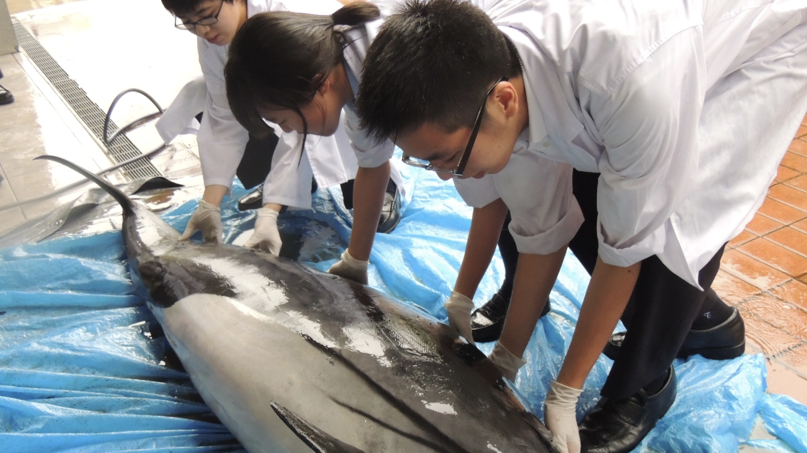
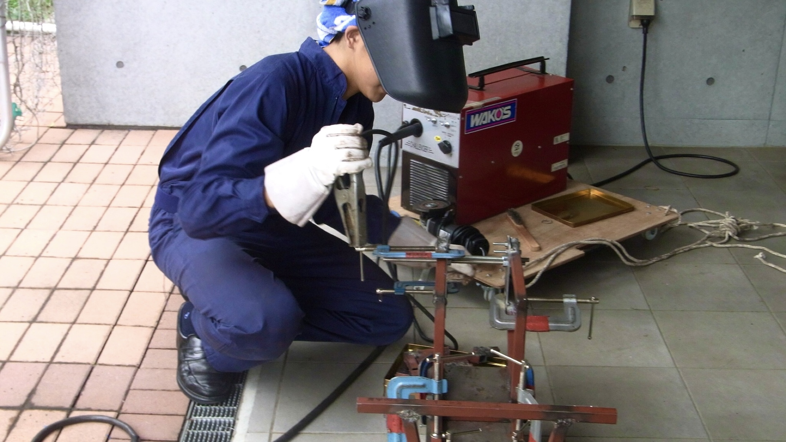
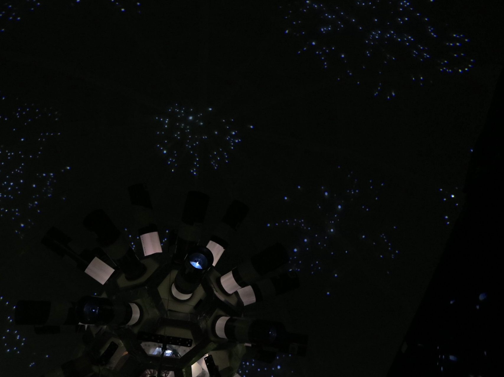

生物班
生物班では、様々な生き物の解剖や骨格標本の作成を行なっています。また、多摩川河川敷にて昆虫や水棲生物を採集し、生態分布の調査なども行っています。
技術班
技術班では、エコワンチャレンジカップに出場する電気自動車を製作したり、ドローンなどの操縦やホームページの作成に必要なプログラミングを学んでいます。
地学班
地学班では、第１校舎屋上にて天体望遠鏡を使った天体観測や星の観測をしています。この他にも、学校周辺地域の地層の調査や古生物の研究なども行っています。
Copyright©TCU Todoroki Science Research Club , All Rights Reserved.